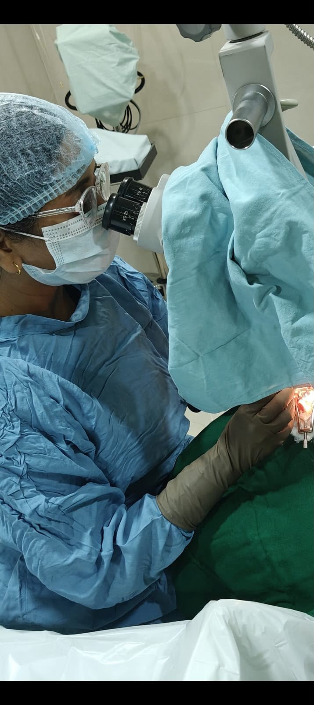
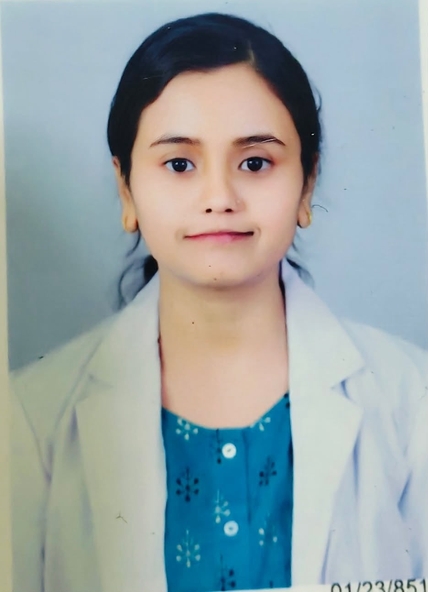

Eye Examinations
Precise vision testing and early screening for glaucoma, cataracts and other silent eye diseases.
ADVANCED EYE CARE IN GONDIA
Compassionate, complete eye care—powered by modern technology and a personal touch.
Trusted eye care
for every generation

WELCOME TO MORYA
At Morya Eye Hospital, we combine advanced medical technology with compassionate care to protect and restore your precious gift of sight. Our personalised care makes every patient feel seen, heard and supported.
Meet your eye specialistOUR SPECIALITIES
From routine examinations to advanced surgical treatment, we care for eyes at every age and stage.
Precise vision testing and early screening for glaucoma, cataracts and other silent eye diseases.
Painless, micro-incision phacoemulsification with a range of premium intraocular lenses.
Specialised care for diabetic retinopathy, macular degeneration and retinal conditions.
Advanced imaging and personalised treatment to help preserve your peripheral vision.
Gentle eye care for children, including squint, lazy eye and congenital conditions.

YOUR EYE SPECIALIST
Ophthalmologist · Gondia
Dedicated to delivering thoughtful, evidence-led eye care in a warm and reassuring environment. Every treatment plan is tailored to your eyes, your lifestyle and your comfort.
THE MORYA DIFFERENCE
Feel comfortable and informed at every step.
Precise diagnostics and advanced treatment.
Expert care for children, adults and seniors.
TAKE THE FIRST STEP
Book an eye consultation and let us take care of your vision.
VISIT US
Morya Eye Hospital, Prime Multi-speciality Hospital infront of Kamdhenu Honda Showroom, Gondia